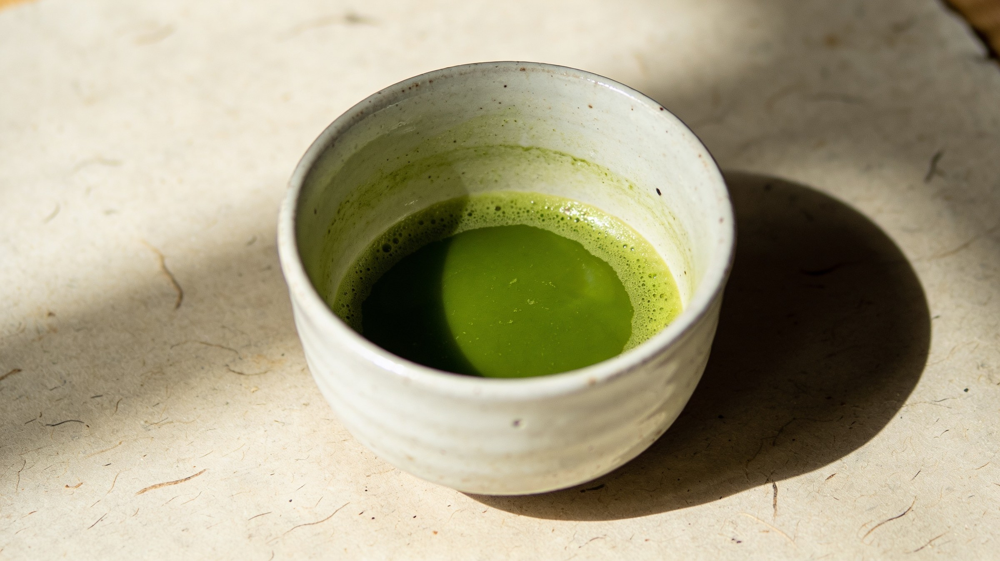
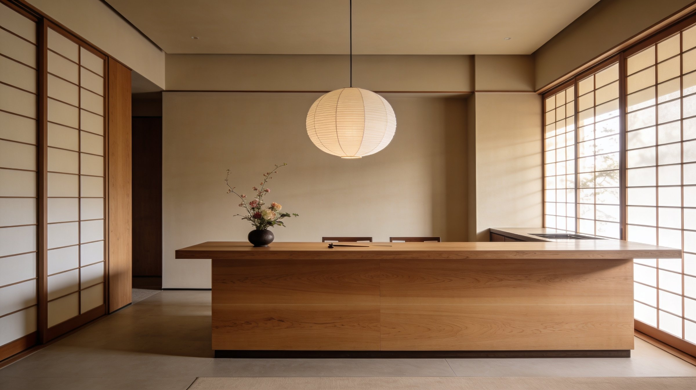
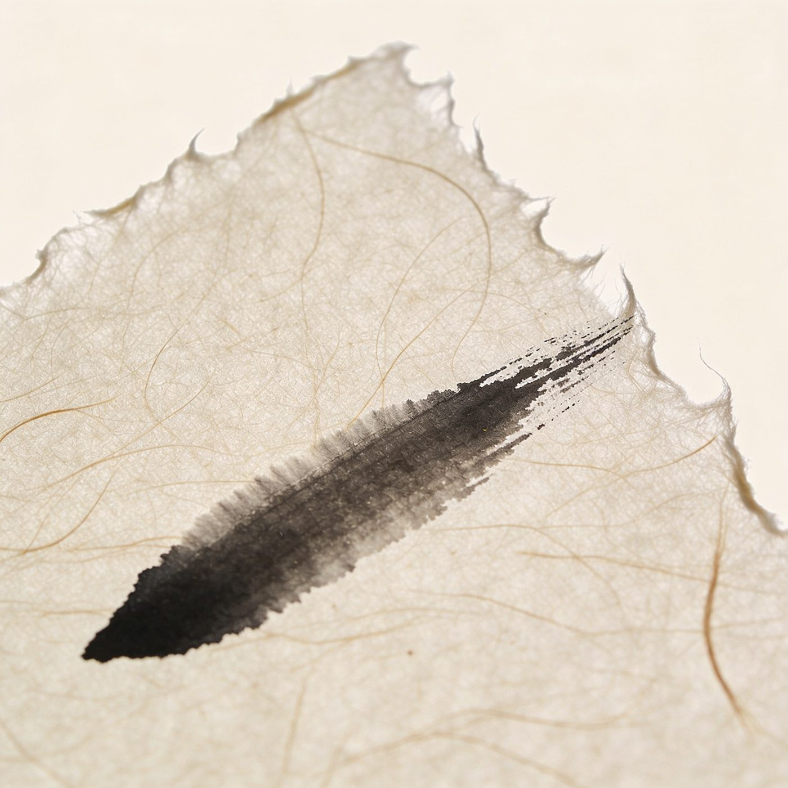
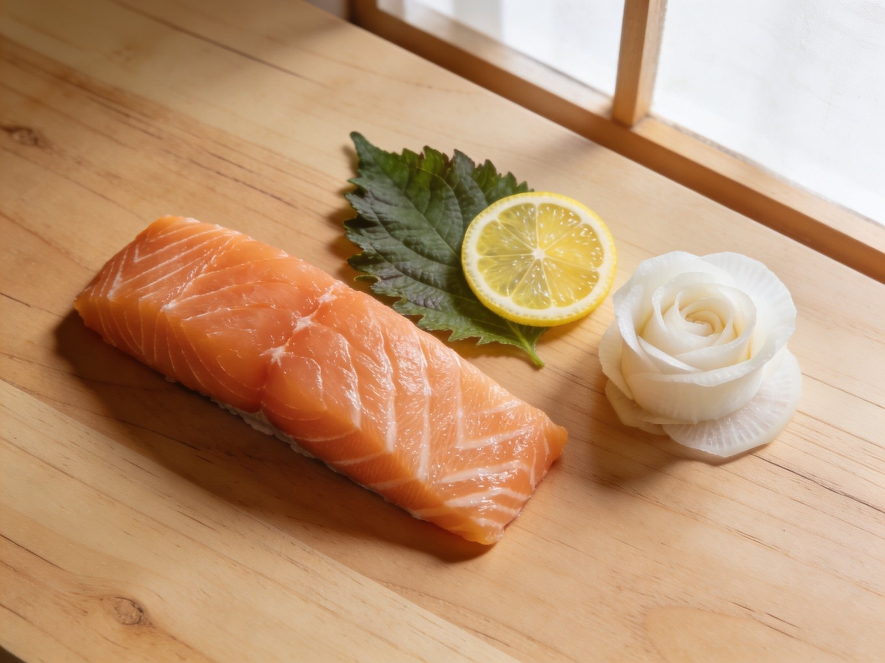

Casablanca · El Cenador
Un comptoir omakase de huit places. Pas de carte. Pas de hâte. Le geste, la saison, et le silence — depuis 2021.

Le sushi n'est pas un repas. C'est une succession de gestes — celui du marché, celui du couteau, celui du chef qui dépose la pièce, et celui de l'invité qui la reçoit. ENSO n'est rien d'autre que ce passage de main en main, répété douze fois.
Le poisson change chaque jour. L'oursin de Dakhla d'octobre n'est pas celui de février. Nous achetons à l'aube, au port. Si la mer ne donne rien, le menu se réinvente avant le service.
Entre deux pièces, un silence. C'est dans cet écart que la précédente s'achève et que la suivante se prépare. Nous servons lentement. Une omakase chez nous dure deux heures.
La céramique est artisanale. Le bois marque le temps. Le riz ne sera jamais identique. Ce qui ne peut être reproduit est ce qui mérite d'être servi.
Pas de musique forte. Pas de service au plateau. Pas de photographies au flash. ENSO est un lieu où l'on écoute manger.
Photographies — Studio ENSO



お任せ · Omakase
Voici la composition d'un service récent. Le déroulé évolue avec l'arrivage du matin et l'humeur du chef.
Omakase · 1 800 MAD par personne · Accord saké en supplément · Service à 19h00 · 21h30
"Huit chaises. Une porte qui se referme. Et le monde qui s'éloigne pour deux heures."— Le Matin du Sahara, 2024
板前 · Itamae
Chef du comptoir — depuis 2021
Vingt années de couteaux. Tokyo. São Paulo. Marrakech. Une obsession traverse les villes : la précision du geste juste, le poisson qui ne ment pas, le riz qui tient une seconde de plus.
Au comptoir d'ENSO, le chef Szczerba travaille seul. Il achète, il taille, il sert, il s'assied parfois pour parler au huitième invité — celui qui s'est levé tôt pour réserver.
Ce n'est pas une mise en scène. C'est ce qu'est un sushi-ya, depuis trois cents ans, à Tokyo et désormais à Casablanca.
— C.S.
Complexe au Petit Rocher
El Cenador
Casablanca
Une porte discrète à l'intérieur d'El Cenador. Sonner à l'interphone marqué 円相.
Mardi — Samedi
Service unique à 19h00
Service tardif à 21h30
Fermé dimanche & lundi. Réouverture après le marché.
Téléphone uniquement
+212 6 66 01 43 19
14h — 22h
Acompte de 500 MAD à la réservation. Annulation gratuite jusqu'à 48h.
予約 · Yoyaku
Le comptoir n'accepte que huit invités par service. La réservation se fait par téléphone — c'est notre première conversation.
Appeler le comptoir +212 6 66 01 43 19